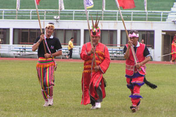

 （一）由來的傳說 阿美族豐年祭的來源，許多部落的說法是來自一則古時候食人族「alikakay （阿里卡該）」的故事。 故事大意如下（李來旺、吳明義、黃東秋，1992）︰ 古時候阿美族人浴血抵抗一稱之為阿里卡該的異族，這是後來的阿美族人有了捕魚祭（海祭）與豐年祭的由來。 傳說在很久很久以前，來了一群身形高大、善於偽裝、長於法術的異類。 他們的眼球如貓眼，皮膚白皙、頭髮長、胸毛相當多，且長到肚臍，手毛腳毛也相當濃密。 他們自稱為「阿里卡該」，也不知道何時遷來，整日無所事事，遊手好閒，懶洋洋地散居在美崙山上。但是後來一向平靜的阿美族各村落陸陸續續發生一連串不尋常的事情，例如小嬰孩被吃、有人假冒丈夫侵犯婦女等慘劇。 後來族人發現是「阿里卡該」搞的鬼，因此有位叫馬讓（marang）的大頭目召集阿美族的青年，將成分成兩軍，北軍命名為lalikit；而南軍則命名為likuda。 但是討伐阿里卡該的戰事一直不順利，族人死傷慘重，阿里卡該卻一點事都沒有。 後來馬讓頭目在海邊睡夢中時，夢見海神Kafit，Kafit出現告訴馬讓，阿里卡該不是人，用人的武器殺不死他，要用蘆葦草製作成的porong（用蘆葦捲成箭矢狀），說完，Kafit就消失了。 後來馬讓就用這個方法，在出征前，向東祭拜海神、向南祭告祖先、先天祭告守護神malatao，就出發征討阿里卡該。 阿里卡該見到馬讓後，馬上未戰就跪地求饒，馬讓人心宅厚，留阿里卡該的性命未加以殺害，並說︰「你們走吧，永遠也不要回來！」 阿里卡該為了感謝馬讓，於是說︰「感謝你們的不殺之恩，為了補償報答你們，以後每年的今天，你們只要到海邊或河邊，用檳榔、酒、三塊糯米糕以及porong祭拜我們，你們將會捕獲大量魚蝦」。 從此阿里卡該不再出現在部落之中，每年6月開始，海中或河中都會湧來大量魚蝦供阿美人捕食。因此，阿美族人征戰「阿里卡該」的軍隊，後來演變成malikit（北部）與malikoda（南部）（皆為豐年祭的用語）的前身﹔而阿美族人也每年舉辦海祭（或捕魚祭）的儀式。 Top
 （二）祭典流程
港口部落（Makotaay）的傳統「年祭（ilisin）」尚保留一些古老的型態，在每年夏季七月中下旬農作收成後舉行。
傳統年祭的宗教本質受西洋宗教的影響，因此年祭活動的前一天特別引用宗教彌撒的儀式，取代了傳統，但族人對年祭的傳統觀念未變，認為年祭是水稻收割之後必須舉行的祭儀活動，是向祖先神靈malatao感恩以及驅邪除疫的儀式。
由男子年齡階級組織舉辦祭典活動，期間紀律嚴格執行，違者接受處分，階級制度充分發揮，除了特殊人物，如頭目之外，公職人員、民意代表、軍人、學者、政治人物，企業界等高層階級人物之身分地位不被突顯，一律按照年齡的大小來執行任務。
古老型的年祭設有招待貴賓日，除此之外的其他日子均拒絕外來部落人士加入歌舞，也不便讓外界族人相互歌舞交流。
祭典的開始從第一天晚上十時起通宵直至次日早上十時止，稱為迎靈祭。
matoasay老人階級坐在內圈的位置上，可唱歌飲酒，並自由進出，外圍是青年階級和壯年階級的歌舞範圍，除非有特別的事情，終日不得離隊或早退，mama no kapah嚴格執行紀律，須臾不離的領導或指揮全體的歌舞。
第二、三、四天為宴靈祭，每天下午五時起至深夜十時止，每日歌舞的形式與迎靈祭相同，始終反覆不變，參加歌舞的全為部落男子，雖然枯燥乏味，但男子組的歌舞有其特色，並充滿力與美的震撼，其中尚有未婚男女相互認識的鵲橋會pakayat；
選拔優秀青年的表揚paiwa：以一杯無限的敬意向族人長輩獻酒的palimo；祭典歌舞最後一首，如海浪波濤的mirecok歌舞，各年齡階級依序向族人長者致敬等等祭典內容。
最後一天則為女子組之歌舞，僅少數mam no kapah及malakacaway階級協助活動，歌舞形式與男子组相同，僅有一首女子组專屬的歌舞，稱為mipihay。
以港口部落「年祭」祭典為例，其祭典為期六天，祭典流程大致可如下說明（以花蓮縣豐濱鄉港口部落為例；引自原舞者2004「海的記憶」年度製作演出手冊）：
（二）祭典流程
港口部落（Makotaay）的傳統「年祭（ilisin）」尚保留一些古老的型態，在每年夏季七月中下旬農作收成後舉行。
傳統年祭的宗教本質受西洋宗教的影響，因此年祭活動的前一天特別引用宗教彌撒的儀式，取代了傳統，但族人對年祭的傳統觀念未變，認為年祭是水稻收割之後必須舉行的祭儀活動，是向祖先神靈malatao感恩以及驅邪除疫的儀式。
由男子年齡階級組織舉辦祭典活動，期間紀律嚴格執行，違者接受處分，階級制度充分發揮，除了特殊人物，如頭目之外，公職人員、民意代表、軍人、學者、政治人物，企業界等高層階級人物之身分地位不被突顯，一律按照年齡的大小來執行任務。
古老型的年祭設有招待貴賓日，除此之外的其他日子均拒絕外來部落人士加入歌舞，也不便讓外界族人相互歌舞交流。
祭典的開始從第一天晚上十時起通宵直至次日早上十時止，稱為迎靈祭。
matoasay老人階級坐在內圈的位置上，可唱歌飲酒，並自由進出，外圍是青年階級和壯年階級的歌舞範圍，除非有特別的事情，終日不得離隊或早退，mama no kapah嚴格執行紀律，須臾不離的領導或指揮全體的歌舞。
第二、三、四天為宴靈祭，每天下午五時起至深夜十時止，每日歌舞的形式與迎靈祭相同，始終反覆不變，參加歌舞的全為部落男子，雖然枯燥乏味，但男子組的歌舞有其特色，並充滿力與美的震撼，其中尚有未婚男女相互認識的鵲橋會pakayat；
選拔優秀青年的表揚paiwa：以一杯無限的敬意向族人長輩獻酒的palimo；祭典歌舞最後一首，如海浪波濤的mirecok歌舞，各年齡階級依序向族人長者致敬等等祭典內容。
最後一天則為女子組之歌舞，僅少數mam no kapah及malakacaway階級協助活動，歌舞形式與男子组相同，僅有一首女子组專屬的歌舞，稱為mipihay。
以港口部落「年祭」祭典為例，其祭典為期六天，祭典流程大致可如下說明（以花蓮縣豐濱鄉港口部落為例；引自原舞者2004「海的記憶」年度製作演出手冊）：
Top第一天 這是豐年祭第一天，大家會準備祭典所需要的。各家婦女開始舂糯米打成糯米糕。當晚十二點祭典就開始。 時間：凌晨12：00開始 地點：豐年祭場 內容：miaoaoway到頭目家拜訪 在以前miaoaoway的階級，平時負責的工作就是巡邏農地保護作物。像狗盡忠職守，老鷹看的很清楚。在山上一待就是三到四個月，在ilisin舉行時回來。 現在，這個過程已經是一種象徵意義。這個階級的年青男子穿著祭典時跳的衣服，頭上則戴著用藤編織成的帽子。這頂帽子的意義是，在以前上山族人穿著工作服，佩帶刀子，頭戴藤編的帽子，帽子的功能是防止身體被週遭的環境傷害。 所以，他們以戴藤編帽與佩帶刀子象徵從山上回來部落參加ilisin，工作服的部分就沒有穿，直接改穿祭典跳舞用的衣服。 這一次跟著他們到頭目家，頭目在訓誡他們。訓誡完畢後，頭目的夫人拿酒糟給miaoaoway階級的年青人吃。 頭目就先到祭場，miaoaoway的年青人則在頭目家等待祭場的人給他們訊息。大概過了半小時「青年之父（mama no kapah）」就帶訊息給他們要他們到祭場。 這時miaoaoway階級的年青人手持火把跑步到祭場，部落的人在祭場用歌聲歡迎他們。以前，miaoaoway階級的年青人回到祭場除了帶著火把照明外，嘴巴也會啣著豬皮，防止年青人說錯話。 而部落的婦女看到自己兒子從山上回來，都會哭泣的歡迎他們。因為，他們為了保護部落的農作物在山上待了三到四個月，為自己的兒子感到驕傲。 到了祭場，他們會把帽子與佩刀掛在祭場中用三根竹子做的架子。完畢後，就回到隊伍中跟部落的人跳舞。 至於，跳舞的頭飾，則是輪流回家去換。換完的人，到隊伍中會拍還沒換頭飾的同伴的背，要他們趕快回家換。 報訊（到豐濱） 早上六點半，整個樂舞結束後，部落的年輕人拿著檳榔。一個接著一個跳過頭目的權杖。跳過權杖的動作代表祝福到其他部落報訊的年輕人能夠一路平順平安的到達目的地。在以前沒有公路沒有汽車的時代，報訊的時候往往都要翻山越嶺走上一整天，時時都要注意週遭環境的危險。
Top第二天 祭典從下午四點開始。晚上，在會場中間舉行表揚青年幹部。樂舞持續到晚上九點。結束後，所有的年齡階級舉行檢討會。 時間：下午到夜晚 地點：豐年祭場 表揚 有mama no kapah和malakacaway的四位年輕人接受表揚。受表揚的人到場中央接受頭目的表揚。講完話後，授予類似值星帶的布斜掛在肩上。mama no kapah的是用織布的腰帶做成，其他的都是紅色布條。 檢討會 在mirecok前幹部會在場中間跟頭目以及長者檢討今天的缺失。樂舞結束後，會進行檢討會。從青年最高的階級（mama no kapah）開始訓話，依序往下。
Top第三天 祭典從下午三點半開始，由mama no kapah和malakacaway先唱。人再陸陸續續進來會場，樂舞持續到晚上九點。結束後，所有的年齡階級舉行檢討會。晚上，在墳墓有為miafatay舉行試膽大會。 時間：下午到夜晚 地點：豐年祭場 試膽大會 樂舞結束後由miaoaoway帶領最小的階級（miafatay）從海祭場走到墳墓。miaoaoway的人會在路途上設置機關嚇miafatay的年輕人，訓練他們的膽量。 檢討會 在mirecok前幹部會在場中間跟頭目以及長者檢討今天的缺失。樂舞結束後，會進行檢討會。從青年最高的階級（mama no kapah）開始訓話，依序往下。
Top第四天 祭典從下午三點半開始，這是男子的最後一天。晚上六點舉行宴客，稍後，進行情人之夜，男女共舞，樂舞持續到晚上九點。結束後，所有的年齡階級舉行檢討會。其實，都在褒揚與頒獎。 時間：下午到夜晚 地點：豐年祭場 牽線之夜 mama no kapah會拉在現場觀禮的女生進入男生的隊伍中。有點在牽線的動作。曾經就因為這樣的過程促成一對姻緣。 檢討會 在mirecok前幹部會在場中間跟頭目以及長者檢討今天的缺失。樂舞結束後，會進行檢討會。從青年最高的階級（mama no kapah）開始訓話，依序往下。
Top第五天 pipihay這是女子的祭儀樂舞，祭典約莫下午五點開始，持續到晚上九點。這一天，男子在海邊捕魚進行pakelang。 時間：下午到夜晚 地點：豐年祭場 mipihay女子的活動（送靈） 這是純粹是屬於女性的樂舞。mipihay有一首專屬的歌謠。舞蹈的進行是逆時鐘，跟男生的順時鐘不一樣。而且，雙手有點像是往上抬，在跟上天溝通。而隊伍的進行方向倒過來，是希望能跟去年一樣豐收豐獵。我在想可能也是讓生活歸於正常吧！ 檢討會 女生的檢討會不是在結束後進行，而是在還在進行樂舞的時候，在場中間討論。 餘興節目（男子）
Top第六天 女子早上舉行pakelang，祭典結束。 時間：下午到夜晚 地點：豐年祭場 pakelang 今天早上，男子各個階級及女子分別各自舉行pakelang，ilisin祭典結束。 Top
Top